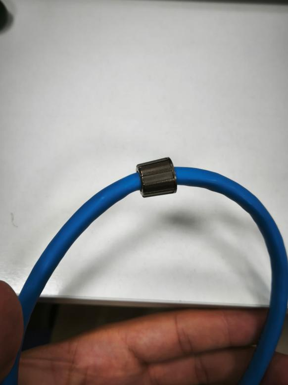
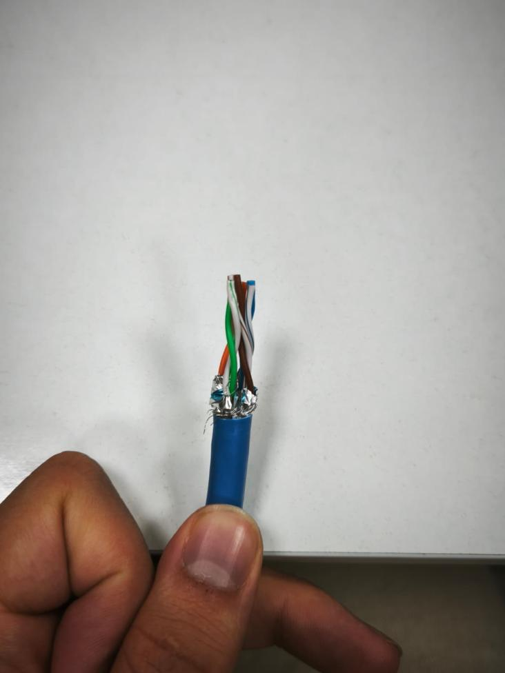
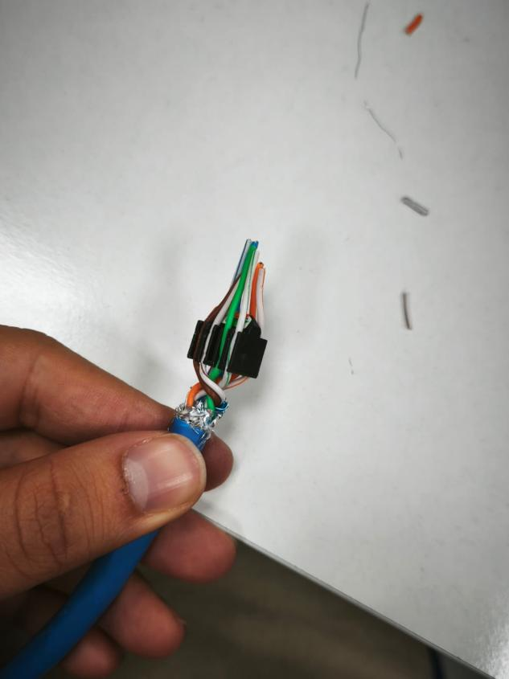
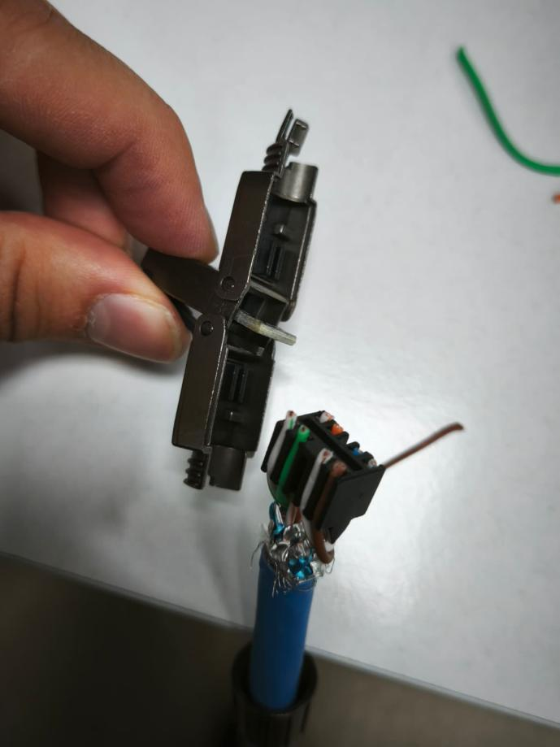
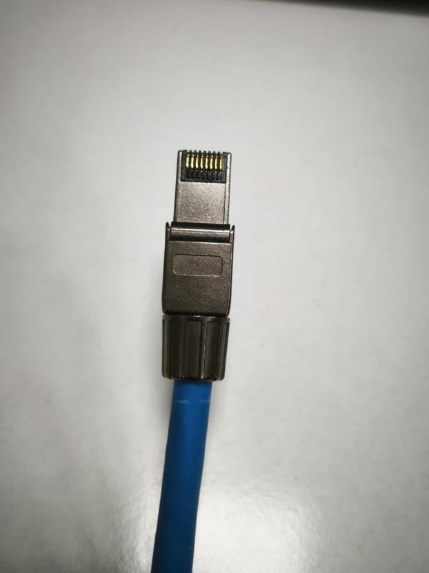

Actividad 3: Construcción de Latiguillos - Cable CAT 8 RJ45
Practicas Act 3 - Documentación
1. Introducción
En esta actividad hemos construido un latiguillo de red utilizando cable de categoría 8 (CAT 8) con conector RJ45. El proceso parte desde cero, con el cable sin pelar, siguiendo los estándares de cableado T568A y T568B.
2. Materiales utilizados
- Cable de red CAT 8
- Conectores RJ45
- Embellecedor (boot)
- Pelacables
- Crimpadora
- Comprobador de red
3. Estándares de cableado T568A y T568B
Para realizar el latiguillo seguimos el orden de colores marcado por los estándares T568A y T568B. Ambos extremos del cable llevan el mismo estándar (cable directo).
| Pin | T568A | T568B |
|---|---|---|
| 1 | Blanco/Verde | Blanco/Naranja |
| 2 | Verde | Naranja |
| 3 | Blanco/Naranja | Blanco/Verde |
| 4 | Azul | Azul |
| 5 | Blanco/Azul | Blanco/Azul |
| 6 | Naranja | Verde |
| 7 | Blanco/Marrón | Blanco/Marrón |
| 8 | Marrón | Marrón |
4. Proceso de construcción
Paso 1 - Insertar el embellecedor
Antes de pelar el cable, insertamos el embellecedor por el extremo. Es importante hacerlo en este momento porque después ya no se puede poner sin deshacer el conector.

Paso 2 - Pelar el cable
Pelamos la cubierta exterior del cable y separamos los cuatro pares trenzados que hay dentro.

Paso 3 - Ordenar los pares
Ordenamos los ocho hilos siguiendo el código de colores del estándar T568A o T568B, aplanándolos y cortando las puntas para que queden a la misma altura.

Paso 4 - Insertar en el conector y crimpar
Introducimos los hilos ordenados en el conector RJ45, comprobamos que llegan al fondo, y crimpamos con la herramienta hasta que los pines queden fijados.

Paso 5 - Colocar el embellecedor y repetir
Deslizamos el embellecedor sobre el conector y repetimos todo el proceso en el otro extremo del cable.

5. Vídeo del proceso
A continuación se puede ver el proceso completo de construcción del latiguillo:
6. Resultado
El cable quedó correctamente terminado con los conectores RJ45 crimpados en ambos extremos y el embellecedor colocado. Al pasarlo por el comprobador de red todos los pines dieron continuidad correcta.
7. Autores
Daniel C. / Bruno I. / Rodrigo G.